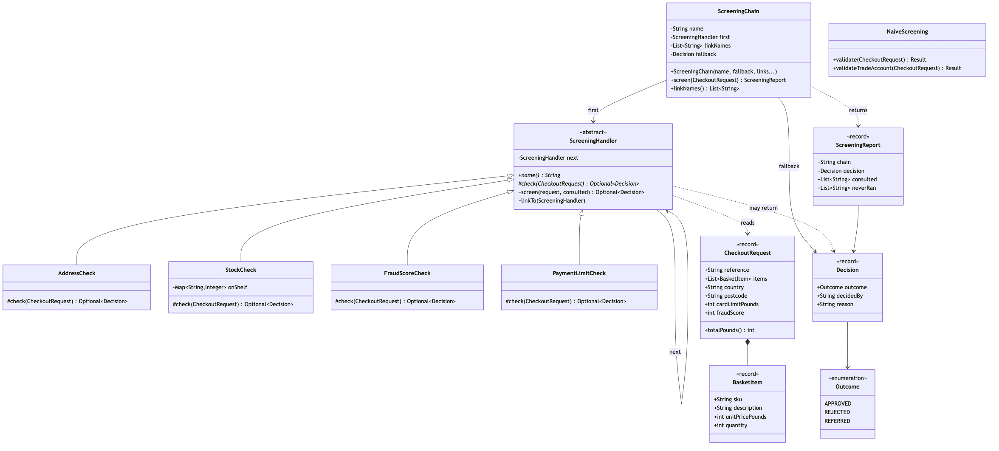

Chain of Responsibility Pattern
Demonstrates the Behavioural Chain of Responsibility design pattern using the screening an online shop runs before it accepts an order as an example.
Nine classes, and four of them are the checks. If you read one file, read ScreeningHandler — it is about twenty lines and it is the entire pattern.
ScreeningHandler— the abstract link, and the whole pattern. It holds one field, the successor, and declares one method for subclasses to write:check, returningOptional<Decision>. Empty means no opinion, pass it on; a presentDecisionmeans I am answering, and the chain stops here. The walk itself,screen, is written once and isfinal, so the bug the textbook version invites — a handler that declines and forgets to call the successor — cannot be written here.AddressCheck/StockCheck/FraudScoreCheck/PaymentLimitCheck— one check each, and nothing else.FraudScoreCheckis the one worth reading twice: it has three answers, rejecting above 80, referring between 55 and 79, and saying nothing below that. A link stops the chain whenever it is willing to take responsibility for the answer, and the chain does not care which of the three answers it was.ScreeningChain— the wiring. It links the handlers, hands the request to the first one, and then does nothing until somebody answers: there is no loop in it, no index, and no count. The constructor requires a fallback and there is no constructor without one, so falling off the end of the chain is a policy somebody named rather than a silentnull.Decision/Outcome— the answer, carrying who made it, so "which check rejected this?" is a field rather than a substring of a message.ScreeningReport— the evidence. It names the link that answered and the links that never ran, which is the observable difference between this pattern and a validator that collects every problem with a request.NaiveScreening— the trap, kept for contrast. Four checks welded into one method with an early return on each. Its happy path is correct on purpose: the argument is ordering and drift, not incompetence. The payment check sits above the fraud check, so a suspicious order is reported as a card problem; andvalidateTradeAccountis the copy made to drop the card limit, which lost the address check on the way.CheckoutRequest/BasketItem— the supporting types. Amounts are whole pounds held asint, because a money type would be one more class to learn before reaching the pattern. The request is immutable, so no link can change what the next one sees.CheckoutScreeningDemo— runnable entry point that shows the welded method giving the wrong reason, the same four checks as links, what stopping early actually saves, the same links in a different order reproducing the naive bug, and a second policy built by leaving one link out.
Run
./gradlew run
========================================================================
1. The naive method — four checks in one method
========================================================================
R2001 £329 GB SW1A 1AA card limit £250 fraud 92
-> REJECTED — card limit exceeded, please try another card
Both things are true. It reports the card, because the card is
checked first. The customer tries another card and it works.
R2003 £90 GB M1 4BT card limit £2000 fraud 64
-> ACCEPTED — nothing objected
A score of 64 is the case a person should look at. The return
type is a boolean, so there is nowhere to put that answer.
R2004 £360 GB JE2 3AB card limit £0 fraud 20
-> ACCEPTED — nothing objected
The trade method is a copy with the card check removed on
purpose — and the address check removed by accident.
Two desks are on their way to Jersey.
========================================================================
2. The same checks, as a chain
========================================================================
standard: address -> stock -> fraud-score -> payment-limit -> [APPROVED by default]
R2001 £329 GB SW1A 1AA card limit £250 fraud 92
-> REJECTED by fraud-score risk score 92 is at or above the 80 limit
never ran: payment-limit
R2002 £45 GB JE3 8QX card limit £2000 fraud 10
-> REJECTED by address no courier covers JE3 8QX
never ran: stock, fraud-score, payment-limit
R2003 £90 GB M1 4BT card limit £2000 fraud 64
-> REFERRED by fraud-score risk score 64 is in the 55-79 review band
never ran: payment-limit
Read the "never ran" lines. Those are not checks that were
ignored — they are checks that never executed. No warehouse
query, no risk model call, nothing billed for.
========================================================================
3. Same links, one different order
========================================================================
payment-before-fraud: address -> stock -> payment-limit -> fraud-score -> [APPROVED by default]
R2001 £329 GB SW1A 1AA card limit £250 fraud 92
-> REJECTED by payment-limit £329 is above the £250 card limit
never ran: fraud-score
That is the naive answer again, reproduced exactly — and the only
thing that changed is the order of two arguments. The naive
behaviour was never wrong. It was a setting you could not change
without editing the checks.
========================================================================
4. A different policy, by wiring only
========================================================================
trade-account: address -> stock -> fraud-score -> [APPROVED by default]
R2004 £360 GB JE2 3AB card limit £0 fraud 20
-> REJECTED by address no courier covers JE2 3AB
never ran: stock, fraud-score
The card check is left out because trade accounts are invoiced.
Nothing was copied, so nothing could drift, so the address check
is still there — and Jersey is caught.
And the honest note: if your checks and their order never change,
write the four ifs. This pattern earns its keep when the order is
something you need to change without editing any of the checks.Section 1 and section 2 screen the same order, R2001. The difference between them is the whole project: in the first, the answer depends on which check the author happened to type first; in the second, the answer depends on a line of wiring you can print, test and change. Section 3 then proves the point by reproducing the naive answer with the same four link classes and a different argument order.
Test
./gradlew test21 tests across three classes.
ScreeningChainTest asserts the things only a chain gives you. A test that merely checks the outcome — "a Jersey order is rejected" — passes against NaiveScreening just as happily and proves nothing about the pattern. These assert that a link behind the decision never ran, that the same links in two orders give two different answers, that an unclaimed order gets the fallback the wiring named, and that a link declared inside the test file joins a chain compiled before it existed.
ChecksTest makes the isolation argument by omission: every test builds one check and asks it one question. The fraud tests pass an ordinary address and a card with plenty of headroom, because FraudScoreCheck does not look at either.
NaiveScreeningTest pins the bugs as passing tests — the card message that hides a risk score of 92, the grey band that gets accepted because a boolean has nowhere else to put it, and the Jersey order the standard method catches and the copied trade method does not.
Learning Material
Start here if you are new to the pattern — the docs are ordered as a learning path.
| Document | What it covers |
|---|---|
docs/prerequisites.md | What to know and install before you start |
docs/problem-statement.md | The problem the pattern solves, and why the naive approach hurts |
docs/chain-of-responsibility-pattern-explained.md | The pattern itself, the code walked through, pitfalls, and comparisons |
docs/class-diagram.md | Static structure — and why it is also the Decorator diagram |
docs/uml-diagram.md | Runtime call flow, including the calls that never happen |
docs/animation.html | Animated, step-by-step walkthrough — open in a browser. Optional narration via the Narration button |
docs/session.md | A 60-minute guided session plan for teaching it |
docs/youtube.md | Title, description, chapters and thumbnail for publishing the video |
docs/thumbnail.png | The 1280×720 image to upload as the YouTube thumbnail |
docs/spec.md | The project specification — problem, code, video and publishing quality bar. Also as spec.html |
video/ | A narrated video, plus the script and build pipeline |

The pattern in one picture

Video
video/chain-of-responsibility-pattern-explained.mp4 — 1080p, narrated. An audio-only version is alongside it. See video/README.md to rebuild or re-record it.
Also available with a framework
Chain of Responsibility with Spring Pattern reruns this idea on a real framework, and shows what the framework adds and where it can undo the pattern. Watch this project first.